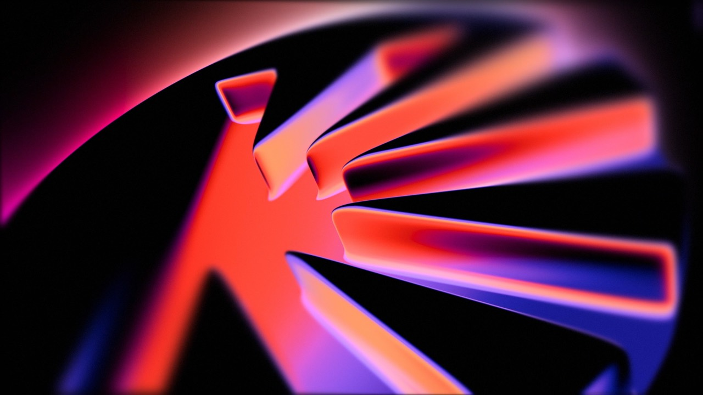
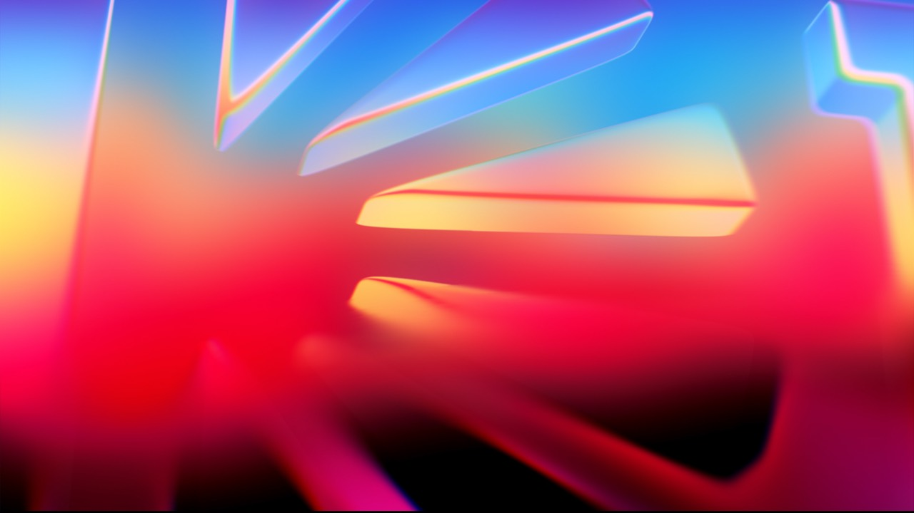
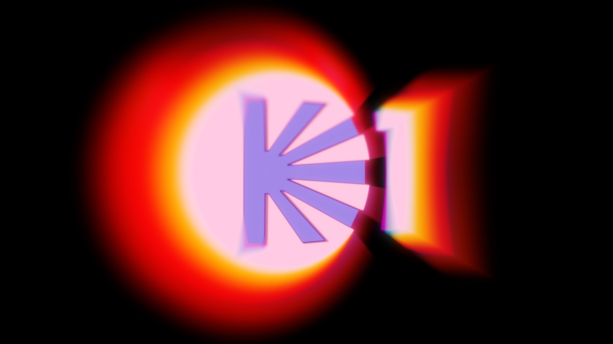
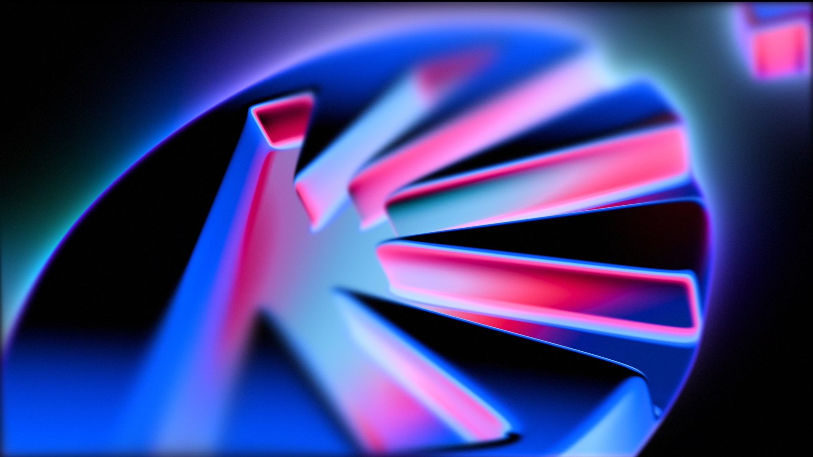

Кинопоиск · 2025–2026
К1: обновлённое эфирное оформление
Сделали айдентику К1 к запуску канала Кинопоиска. К первой годовщине обновили эфирную графику и разработали пакет новых ID, которая отразила многогранность канала, при этом сохранив его узнаваемость, интонацию и характер.

Разработали айдентику К1 к запуску канала Кинопоиска в 2025 году. Через год вместе с командой К1 обновили эфир: фильмы и сериалы разных жанров получили общую графику, а логотип сохранил узнаваемость.
Выстроили оформление вокруг света. В ID-заставках знак светится изнутри, а в анонсах и титрах его градиент переходит в плашки под текстом.


